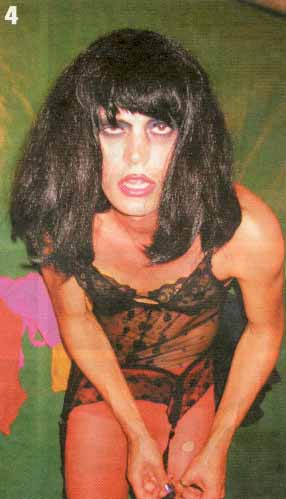
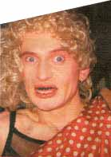
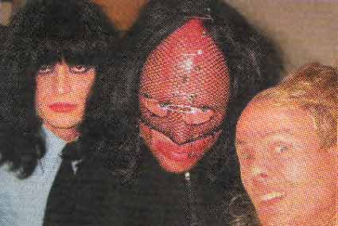
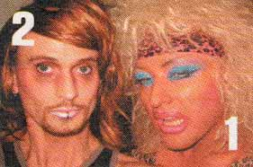
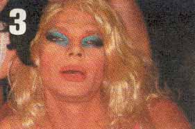
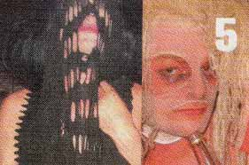
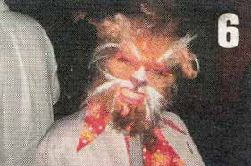

| September 2003 |
| NEJ
SE- NU KOMMER DER TRASH- DRAGS! |
 |
 NÅR DER TALES OM mænd i udklædning, tænkes der oftes på drags, og tales der om drags, tænkes oftes på fjer, palietter og en mere eller mindre vellykket lipsync og dansktop- eller popikon-imitationer - eller en mere eller mindre perfektionistisk optræden med egne sange. |
Ovenstående dragkategorier udfylder i bund og grund ikke andet end allerede eksisterende normtønder med enten kvindelighed eller perfekt mandig kvindelighed. Og du vil ofte høre dem kræve champagne eller anden form for glamourøs delikatesse, som de uden parykken ikke ville komme i nærheden af.
Men der findes altså nogen som bedre kan lide tis end champagne. Blandt andet fordi det er lidt mrer lunkent og markant kan ændre smag. I foreningen dunst sidder en fraktion af trans-trash-drags-drenge, hvis lyst til at iklæde sig diverse drag'ede attributter lave ravage i de københavnske gader og klubber.

Det handler om at udforske nye terræner og at træde disse terræner kaotisk til, så man kan holde ud at være i pænhedens København. At tilføre København en trash-kraft, som længe ikke er set. Man kan gøre det nøgen, man kan gøre det med et smiket bombekrater i ansigtet og med neglelak på tænderne, ja, man kan gøre det, man vil , bare man gør det. For gør man intet af frygt for mystiske, ukendte repressalier eller grundet normgivne omstændigheder, falliterklærer man sig og tilfører intet til København ud over ligegyldighed.
Man startede det hele i klar opposition til det åbenlyst kommercielle homo-miljø, til hvis pop- og housepiber man fandt det svært at danse til. Og man indledte sit ustrukturedede angreb ved at crashe homo-fester (til de fleste fester kommer "drags" alligevel gratis ind), hænge fra lofter, stjæle sprut i baren og smugle folk indefor gemt under store parykker. Og man fik lov, for alle bar- og klubejere kunne godt se, at der her var gang i en indtil videre ukendt hærge-energi, som både var opfindsom, plat, morsom, scary, sexet og ligetil.
Så startede man sine egne fester i en kælder i Sommerstedgade på Vesterbro, i Bøssehuset på Christiania og i Ungdomshuet på Nørrebro med henblik på at give alle de stakkels hungrende alternative homoer gode fester. Efterhåndenfandt man dog ud af, at dunst-festerne tiltrak et bredere udsnit af homo-miljøet samt en stor gruppe af heteroseksuelle, der ligesom homoerne var trætte af omgangsformen andre steder i byen.
Trans-trash-drags-drengede laver alle shows, som er kendetegnet ved spontanitet, manglende frygt for at falde ved siden af samt lysten til og behovet for det imperfekte. Og udlandet har meldt sin interesse. Blandt andet i Stockholm og Berlin, hovr de har stiftet bekendskab med de afbildede personligheder.
Her en lille oversigt over nogle af trashelementerne:

1 Ramona Macho - Vinder af Frøken Verden 2000. hvor hun som den første nogen- sinde droppede de store kjoler til fordel for et underspillet, filmrefererende show. Ramona har til tider kunstige patter og hår på brystet, en stofpik og nogle gange en blodig trnssexuel fisse, hvis hun da ikke lige er høne.2 Dennis Agerblad - Nr. to til Frøken Verden 2002. Dennis Agerblad er en mand, der arbejder med sine feminine sider, hvorfor han til tider har balloner som patter, men man kan næsten altid se hans pik. Hvis ikke tidligt på aftenen, så skal det nok ske senere, hvis det da ikke lige er hans røvhul, det kommer an på. Han kommer fra Færøerne, hvor kan også startede med at lave musik. Nu synger han på engelsk og dansk og har titler som fx Røvhulspladsen og Dødens Pølse.

3 Stimulundia - er efter mange år vendt tilbage til københavn fra blandt andet LA, hvor hun har boet i områder, hun ikke husker navnet på, men hvor der var mange mennesker - og mange mennesker, der ville have noget af Stimulundia. Hun er ikke så velbevandret på en scene, men er altid villig til at sluge en mikrofon eller assistere med sin guldrøv.4 Puta - Nr. syv til Frøken Verden 2002, hvor hun beviste sin fysik ved at kaste sig ud i et par stage dives og blive grebet. Puta behersker fransk, tysk, polsk, italiensk og så alt det ligegyldige. Hun er med sin lyst til at gribe i loftsbjælker, rive gardiner ned, flyve igennem rummet og hænge fra tråde mange gange til fare for andre, da hun altid på et tidspukt falder. Hun inbydes dog fortsat, selv om hun fik alle smidt ud af Stockholm, fordi hun crashede din største svenske dragstjernes hovednummer.

5 Lucy - Lucy er ingen luder, hun er bare fattig. Hun formår kun at rikke sig stiv, vælte igennem og ned og stjæle folks cigaretter. Hendes gode ven er Johnny arehouse, som også laver musik til og med Lucy. De overlapper til tider hinanden med en sådan ihærdighed, at man ikke lægger mærke til, hvordan og vorledes. sangene hedder blandt andet Pussy In My Shoe og Hate Myself.
6 Thom - Med sit babyface, sin røv og sin skrigende stemme bestemmer Thom, hvornår den mest trachede, maskuline energi skal køres af. Han har blandt andet født og været det dyr, vi alle gerne vil være, nemlig det oprejste.Print denne side